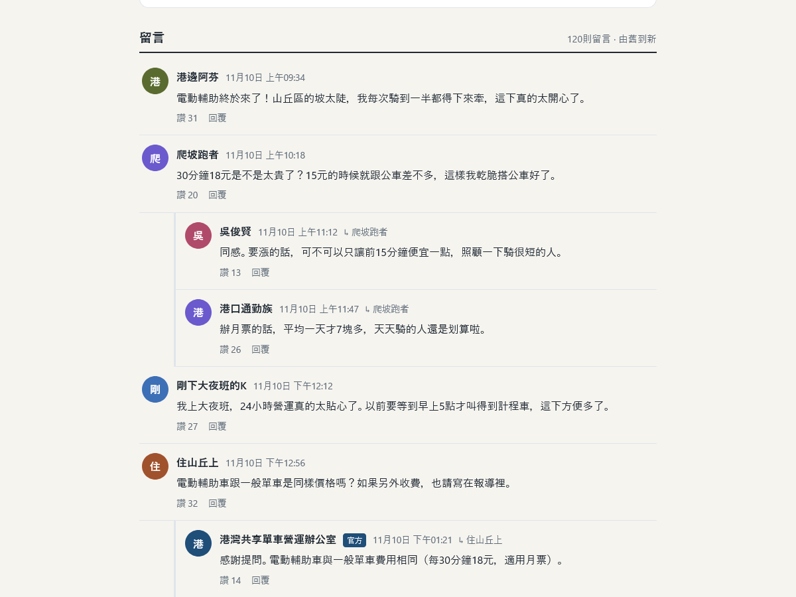
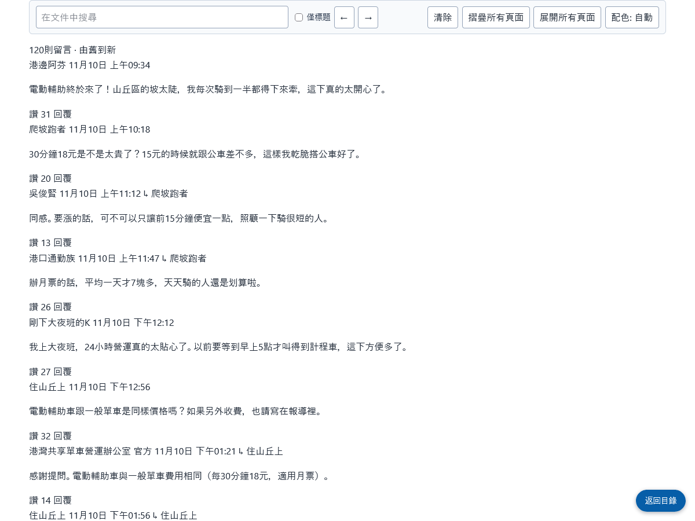

Grab All Files 的實際輸出
把留言區載入到最後並存成一個 HTML 的結果（免費版）
一個往下捲動才會繼續載入的虛構留言區（約 120 則，含回覆），只儲存了目前開啟的這一頁。擴充功能會自動把頁面捲到底，把載入的 120 則留言全部整合到一個 HTML 檔案中。外觀選的是「整理為易讀格式」，因此儲存的是統一格式的正文，而不是網站原本的設計。
輸出檔案
在相同視窗寬度下並排比較


製作方式
- 來源頁面
- /samples/source/zh_TW/comment-thread/
- 擴充功能
- Grab All Files（5.8.53 之後的版本，預計以 5.8.54 提交）
- 瀏覽器
- Firefox 160.0 (Windows 11, headless)
- 方案
- 免費版
- 製作日期
- 2026-11-16
- 設定
- 頁面：僅目前頁面
- 外觀：整理為易讀格式
- 儲存形式：附目錄及搜尋的HTML